Explore a evolução cronológica do Deus Demônio através das linhas temporais dos jogos.
Demigra estreou originalmente como o grande antagonista de Dragon Ball Xenoverse. Há 75 milhões de anos, ele era um prodígio entre os magos celestiais do Palácio Divino ao lado de Chronoa. Consumido pela ambição de dominar o tempo e reescrever a história à sua imagem, ele tentou usurpar o fator temporal e acabou banido para o Reino dos Demônios.
Ao longo de suas aparições nos jogos e em Super Dragon Ball Heroes, Demigra se provou um estrategista implacável que não hesita em trair aliados e deuses para absorver fontes de energia proibidas, evoluindo de um feiticeiro exilado ao posto definitivo de Rei das Trevas.
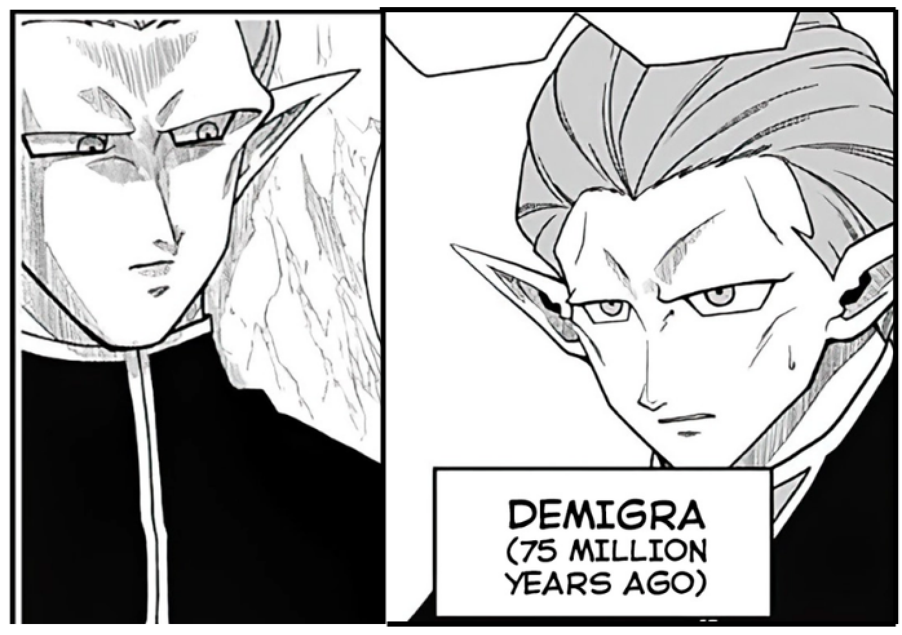
Visual original de 75 milhões de anos atrás, quando ele trabalhava de forma pacífica no Palácio Divino ao lado de Chronoa. Usa túnica escura com detalhes brancos.
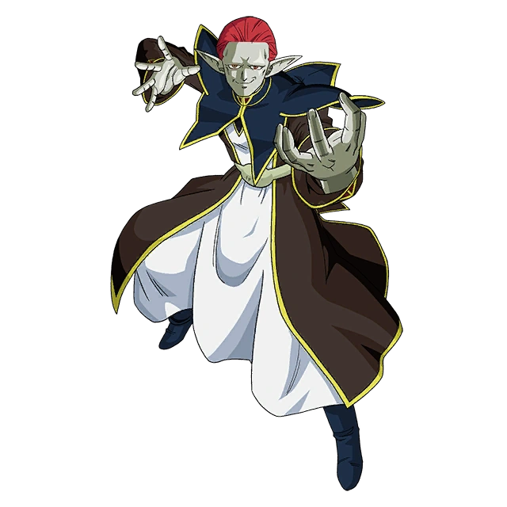
Ainda jovem, usando o traje branco e azul clássico e um poder maior que sua forma base tradicional. Esta é a versão do início de sua rebelião contra os deuses.
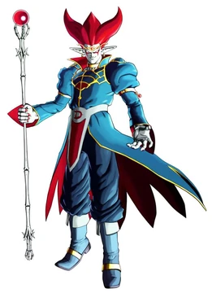
Forma padrão vista em Xenoverse 1. O cabelo vermelho ganha formato de 3 chifres flamejantes e ele passa a ostentar a tiara dourada na testa.
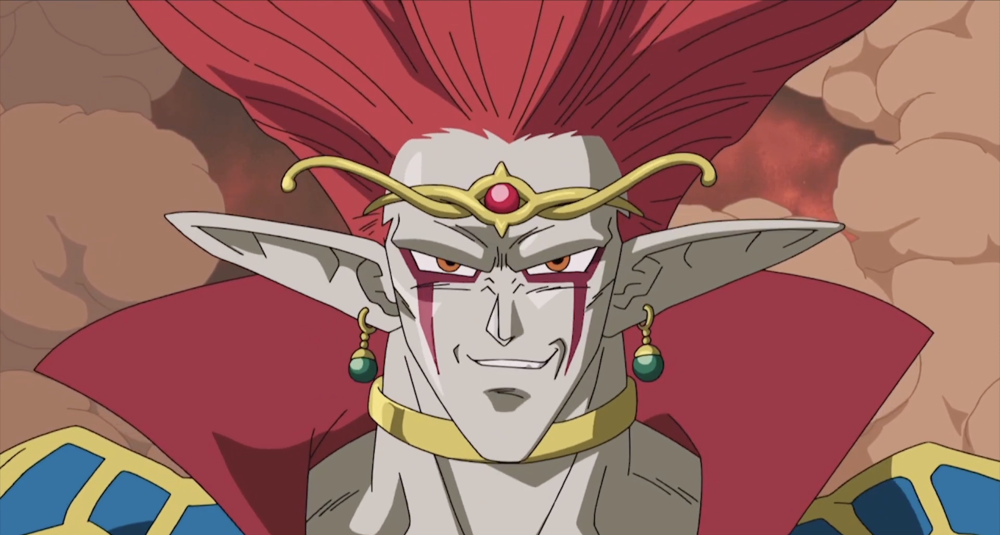
Sem mudanças físicas aparentes na fisionomia, mas envolto por um Ki esmagador após engolir o pássaro divino e alcançar controle total do tempo.
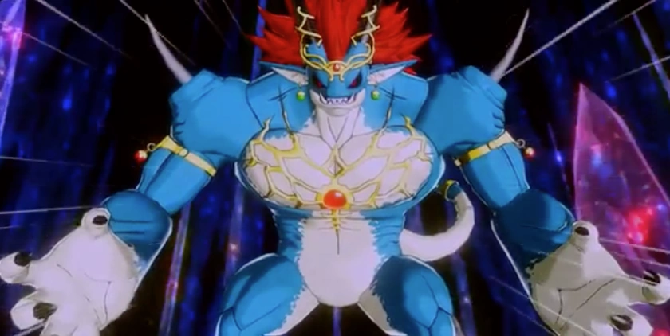
O monstro bípede colossal azul e reptiliano com asas pretas. Foco total em força física bruta e destruição em massa no clímax de Xenoverse.
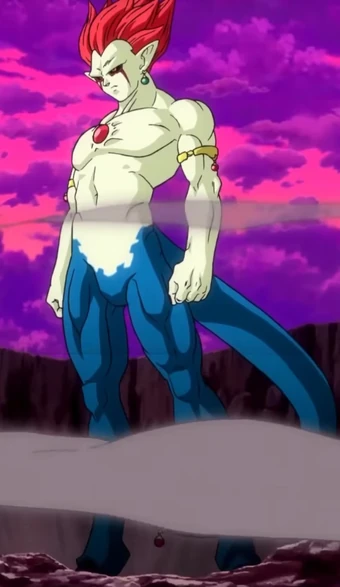
Estado híbrido esguio gerado por aprimoramento mágico. Apresenta pele cinza, peito nu, cauda azul e o chamativo cabelo rosa/magenta espetado para cima.
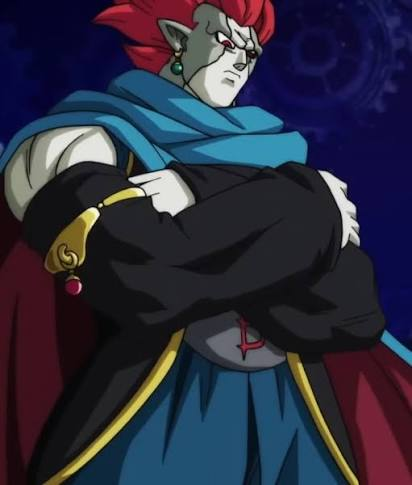
Visual clássico de braços cruzados com mangas pretas bufantes e capa vermelha real, logo após usurpar o Fator Sombrio de Mechikabura.
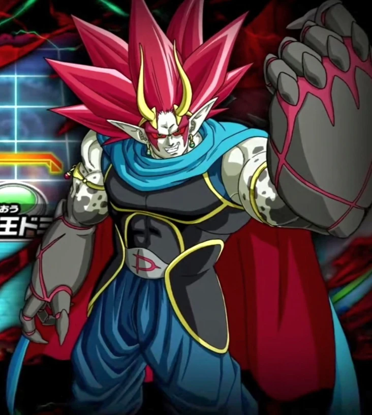
Corpo extremamente musculoso carregado de poder sombrio. Ele assume a icônica coroa de chifres dourados na testa e manoplas cinzas.
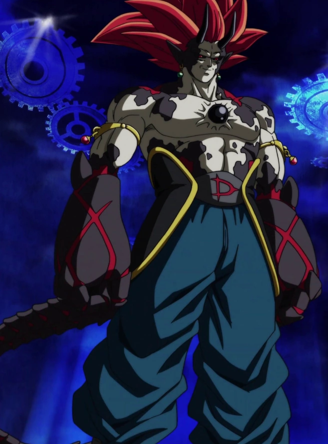
A variação com manoplas pretas pesadas, cauda e marcas escuras no peito semelhantes a sementes biológicas. O auge de sua fusão de poderes.
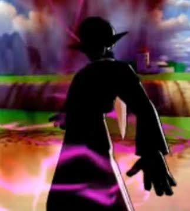
A projeção translúcida em forma de sombra e Ki roxo/rosa. Usada para se comunicar e lutar através das fendas temporais enquanto estava selado.
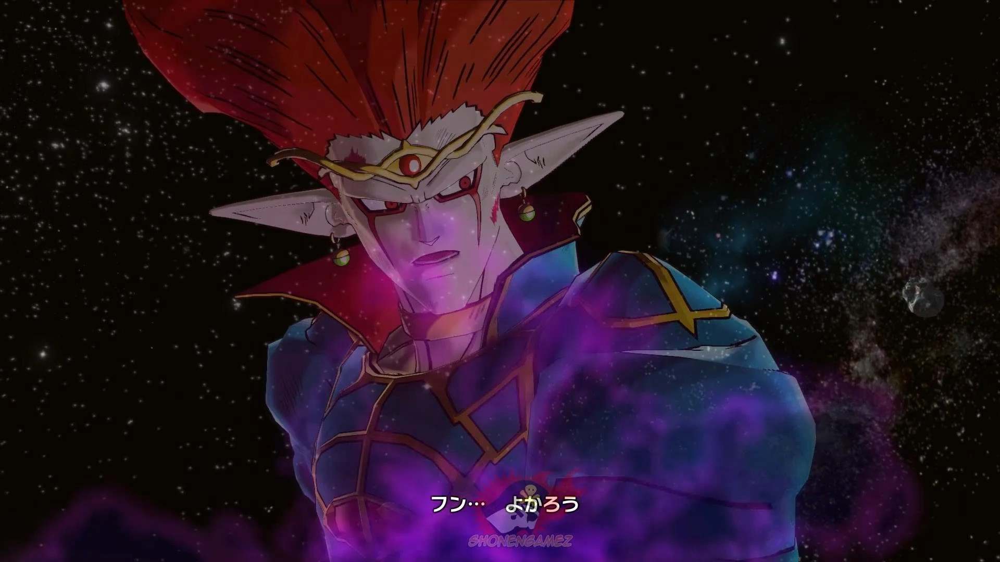
Um Guerreiro Artificial criado pelo próprio Demigra usando magia. Usado para lutar através da história enquanto está selado na Fenda Temporal em Dragon Ball Xenoverse.
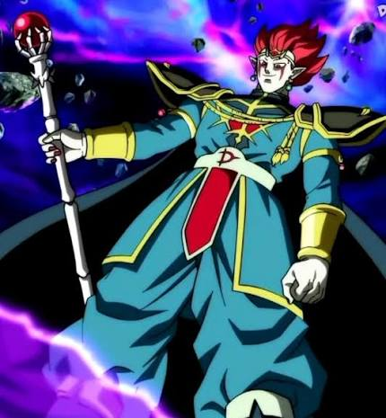
Demigra jovem, mas com seu cajado, usando seu traje azul-turquesa tradicional, cabelo espetado e um poder muito maior
1- Origem Culinária: O nome de Demigra vem de "demi-glace", um molho tradicional da culinária francesa, seguindo a famosa tradição de Akira Toriyama (e dos jogos da franquia) de nomear personagens com trocadilhos baseados em comida.
2- Conexão Com "Demiurgo": Também faz referência a demiurgo, um conceito filosófico/divino de um ser criador do universo, refletindo seu desejo de reescrever a história.
1- Ex-Guardião: Antes de se tornar um vilão corrompido, Demigra foi um dos guardiões do Pássaro do Tempo (TokiToki) no reino celestial, trabalhando lado a lado com Chronoa (a Kaioshin do Tempo).
2- Trição: Ele tentou roubar TokiToki para controlar o tempo a seu bel-prazer, o que levou Chronoa a travi-lo e bani-lo para a Rachadura do Tempo por 75 milhões de anos.
1- Apagamento Da Existência Em sua forma de Deus Demônio Gigante, ele adquire um poder temporal tão vasto que consegue ameaçar apagar a existência de seus alvos ao longo de toda a história do multiverso.
2- Controle Mental Temporal: Ele foi capaz de manipular à distância figuras formidáveis como Freeza, Cell e Majin Boo nas linhas temporais distorcidas.Ele foi capaz de manipular à distância figuras formidáveis como Freeza, Cell e Majin Boo nas linhas temporais distorcidas.
1- Aparição Na Legend Pattrol: Usando a DLC "Legend Pattrol Pack, você pode jogar toda a campanha principal de Dragon Ball Xenoverse, em que Demigra, o vilão principal, aparece como chefe em sua forma Deus Demônio (Demon God) e posteriormente na sua Forma Final Monstro Gigante como o chefe final da campanha principal da Legend Pattrol (Patrulha Lendária).
2- Como Personagem Jogável: Você pode comprar o Presente "Demigra" na Loja De Medalhas e entregar para Fu, em baixo da Fenda Temporal, fazendo isso, você pode usar o Demigra Demon God como personagem jogável em modos específicos: No Assalto Cristal (Crystal Raid), Duplo e Solo, e no Treinamento (Training).
• Papel: Como explicado acima, ele é o antagonista principal e chefe final.
• Detalhes: O jogo marca a estreia do personagem na franquia. Demigra tenta escapar da sua prisão na Rachadura do Tempo (onde foi selado pela Kaioshin do Tempo por 75 milhões de anos) distorcendo momentos históricos marcantes de Dragon Ball para acumular energia. Ele possui formas alternativas ao longo das batalhas, incluindo sua icônica Forma Final de monstro gigante.
• Papel: Aparições especiais e conteúdo expandido.
• Detalhes: Como explicado acima, embora não seja o vilão do modo história principal deste segundo jogo, ele faz aparições em cenas de computação gráfica. Além disso, ele foi integrado jogavelmente através de atualizações gratuitas (no modo Coliseu de Heróis) e a sua saga original do primeiro jogo foi adaptada na DLC Legend Patrol Pack.
Este é o ecossistema onde Demigra teve o maior desenvolvimento e o maior número de transformações, aparecendo nas seguintes versões do jogo:
• Dragon Ball Heroes (Arcade - exclusivo do Japão): Introduzido como chefe e depois como personagem jogável em cartas a partir da expansão God Mission 7 (GDM7). Ganhou diversas formas exclusivas como a forma Makyouka (Aprimorada por Magia) nas missões seguintes.
Super Dragon Ball Heroes: World Mission (Nintendo Switch / PC - 2019): O jogo que compilou as cartas dos arcades para o Ocidente. Demigra aparece tanto no modo história quanto como uma carta coletável e utilizável em combate.
Expansões Recentes de Arcade (Universe Mission, Big Bang Mission e Ultra God Mission): Onde ele retorna com visuais repaginados e atinge o ápice do seu poder, assumindo o manto de Rei das Trevas Demigra (Dark King Demigra).